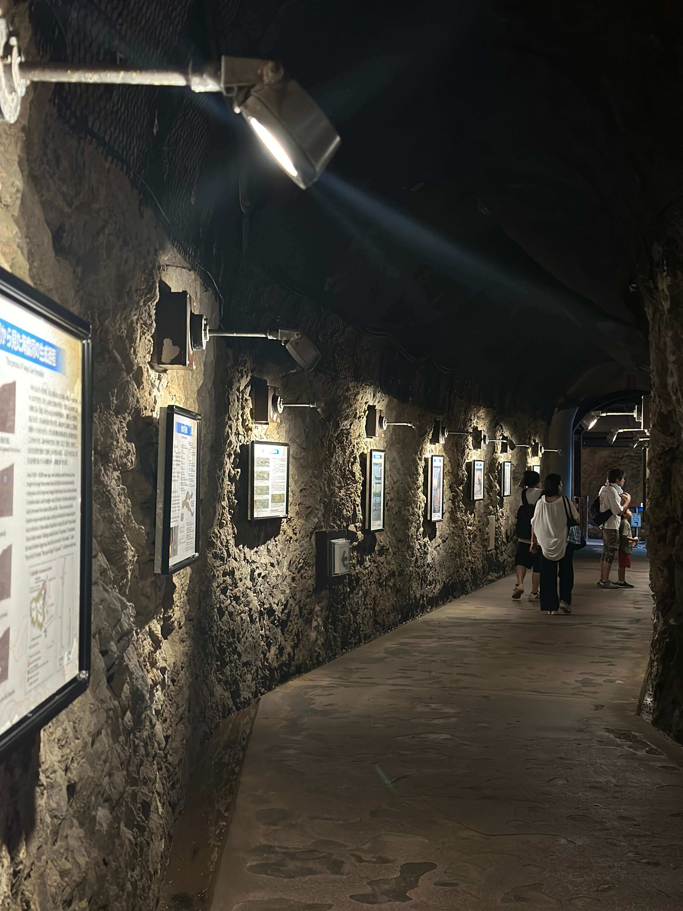
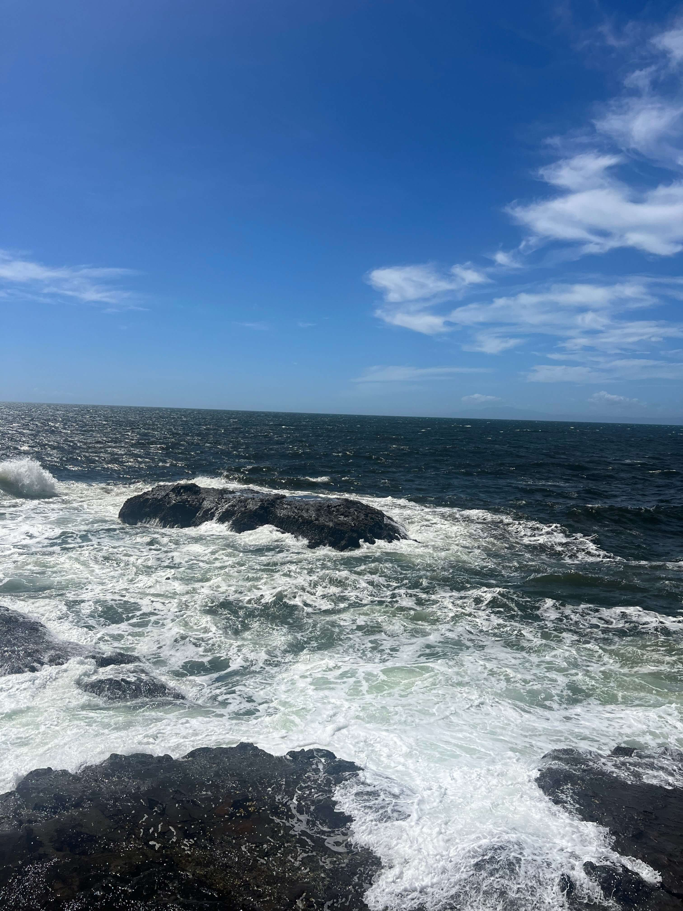
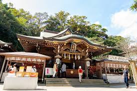

Enoshima Island
Coastal Escape

Introduction
Enoshima is a picturesque small island connected to the mainland by a bridge, located just off the coast near Kamakura. It's a popular tourist destination known for its shrines dedicated to the goddess Benzaiten, beautiful botanical gardens, scenic caves, and stunning panoramic views, including occasional glimpses of Mount Fuji on clear days

Iwaya Caves
The Iwaya Caves are a mystical series of sea caves carved into the cliffs at Enoshima's far end.

Ocean View
Enoshima Island boasts breathtaking ocean views from almost every vantage point. You can see the Sagami Bay and on clear you can even see Mount Fuji

Enoshima Shrine
Enoshima Shrine is a collection of three distinct shrines scattered across the island, dedicated to Benzaiten